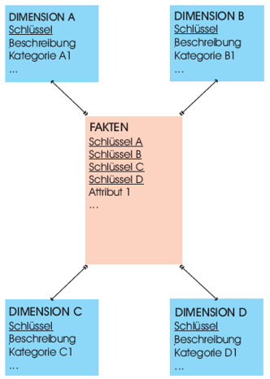
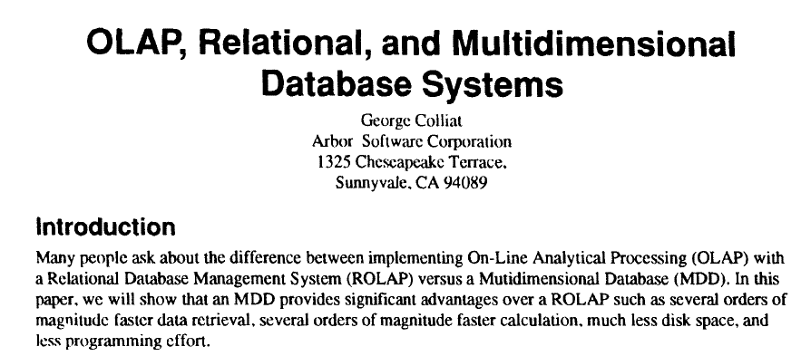
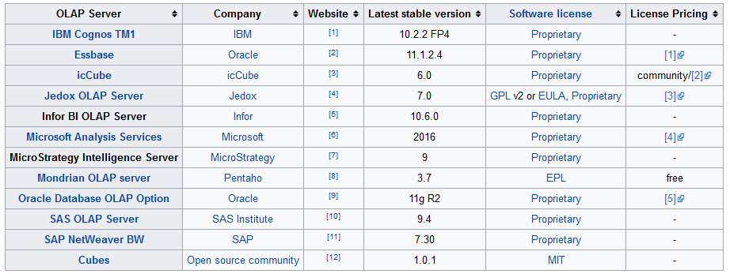
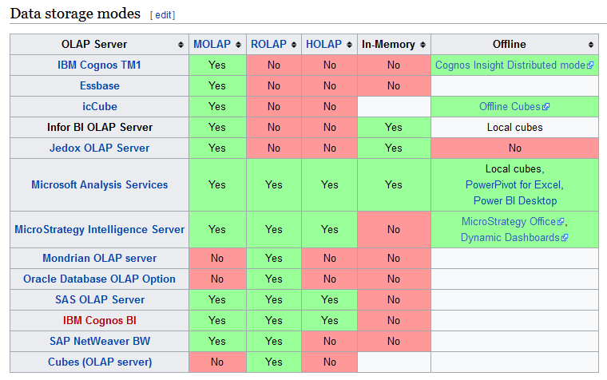
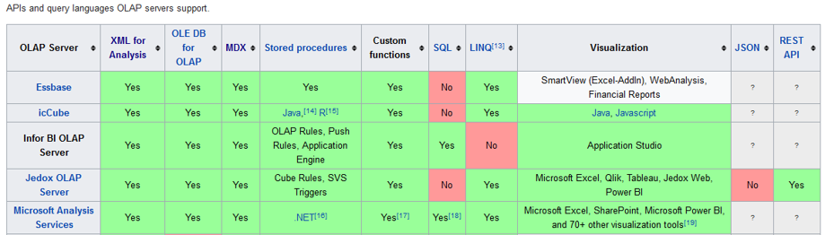
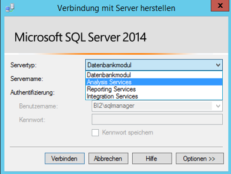
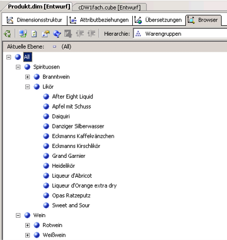
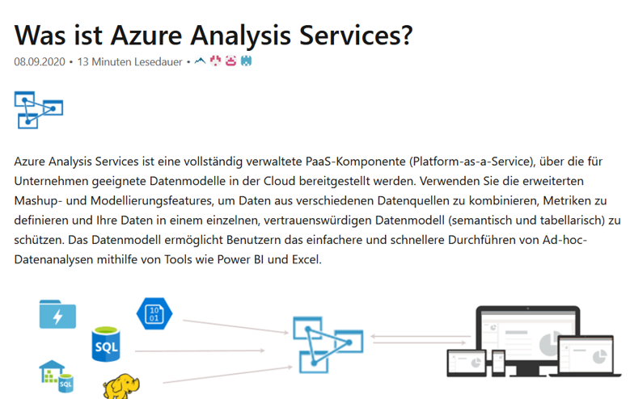

Business Intelligence
Online Analytical Processing (OLAP)
Gliederung
Online Analytical Processing (OLAP)
- Einführung
- Definition
- Betriebswirtschaftliche Einsatzbereiche
- Regeln und Kriterien für OLAP Systeme - Codd
- Navigation
- Frontend
- Speicherung multidimensionaler Daten - MOLAP
- Speicherung multidimensionaler Daten - ROLAP
- OLAP Server
- SSAS
Einordnung

Einführung
- Multidimensionale Perspektiven auf verfügbare quantitative Datenbestände haben sich als geeignet erwiesen, um den Mitarbeitern einen flexiblen und intuitiven Zugang zu den benötigten Informationen zu eröffnen.
- Multidimensionalität als zentrales Gestaltungsparadigma:
- Betriebswirtschaftlich relevantes Zahlenmaterial simultan entlang unterschiedlicher Klassen logisch zusammengehöriger Informationsobjekte aufgliedern.
- Korrespondiert mit der naturgemäß mehrdimensionalen Problemsicht der Unternehmungsanalytiker.
Einführung
- Betriebswirtschaftliche Kenngrößen (= Fakten)
- Umsatz
- Dimensionen
- Kunden, Artikel, Regionen
- hierarchische Beziehungen (Navigationspfade, Verdichtungspfade)
- Slowly Changing Dimensions
- Dimensionen entlang derer sich betriebswirtschaftliche Kenngrößen im Zeitablauf untersuchen lassen.
- Umsätze pro Monat in den verschiedenen Regionen und Produktgruppen
Einführung

Definition
- Software-Technologie, die Managern wie auch qualifizierten Mitarbeitern aus den Fachabteilungen
- schnelle, interaktive und vielfältige Zugriffe auf relevante und konsistente Informationen ermöglichen soll.
- Im Vordergrund stehen dabei dynamische und multidimensionale Analysen auf historischen, konsolidierten Datenbeständen.
Betriebswirtschaftliche Einsatzbereiche
Einsatz multidimensionaler Systeme nach Funktionsbereichen

Betriebswirtschaftliche Einsatzbereiche
Vertriebscontrolling: Klassischer Einsatzbereich
- Analyse von Erlösen und Absatzmengen
- Zeit-, Kunden- und Artikeldimensionen
- Vergleiche Ist-Zahlen vs. Planzahlen
- Aufdecken von Abweichungsursachen
- Integration externer demografische und makroökonomische Daten
- 80/20-Analysen
Regeln und Kriterien für OLAP Systeme - Codd
"Providing OLAP to User-Analysts: An IT Mandate"

Codd, Edgar F.; Codd, Sally B.; Salley, Clynch T. (1993): Providing OLAP (On-Line Analytical Processing) to User-Analysts: An IT-Mandate, White Paper, o. O. 1993
Regeln und Kriterien für OLAP Systeme - Codd
- Multidimensionale Denkweise (Kernanforderungen):
- Mehrdimensionale konzeptionelle Perspektiven
- Grundprinzipien der gleichgestellten Dimensionen
- Unbeschränkte kreuzdimensionale Operationen über Dimensionen hinweg
- Unbegrenzte Dimensions- und Aggregationsstufen
- Zweck: Schnelle Ad-Hoc-Analysen (Kernanforderung):
- Stabile Antwortzeiten bei der Berichterstattung
- Technische Anforderungen:
- Transparenz
- Zugriffsmöglichkeit
- Mehrbenutzerfähigkeit
- Implementierungshinweise:
- Client/Server Architektur
- Dynamische Verwaltung „dünn besetzter“ Matrizen
- Sonstige Anforderungen:
- Intuitive Datenmanipulation
- Flexibles Berichtswesen
Navigation
Würfeldarstellung mehrdimensional strukturierter Daten

Navigation
Präsentation und Navigation

Navigation
Präsentation und Navigation - Rotation des Datenwürfels

Navigation
Präsentation und Navigation - Rotation des Datenwürfels

Navigation
Präsentation und Navigation - Drill Down

Navigation
Präsentation und Navigation - Drill Across

Aus: Kemper, Baars, Mehanna. Business Intelligence - Grundlagen und praktische Anwendungen. Vieweg. 2010
Frontend
Cognos Powerplay

Frontend
Cognos Powerplay

Frontend
Microsoft PowerBI

Frontend
Erweiterungen handelsüblicher Standardsoftwarepakete: Beispiel Palo

Frontend
Pivot Tabellen

Quelle: Vorlesung Datenanalyse - Prof. Dr. Gluchowski - TU Chemnitz
Frontend
Web Browser

Quelle: Vorlesung Datenanalyse - Prof. Dr. Gluchowski - TU Chemnitz
Speicherung multidimensionaler Daten
Speicherung (logisch) multidimensionaler Daten

Aus: Kemper, Baars, Mehanna. Business Intelligence - Grundlagen und praktische Anwendungen. Vieweg. 2010
Speicherung multidimensionaler Daten
Speicherung (logisch) multidimensionaler Daten - SSAS

Speicherung multidimensionaler Daten - MOLAP
Speicherung (logisch) multidimensionaler Daten in einer …
(physisch) multidimensionalen Datenbank
- Datenbanksystem, das die auf konzeptioneller Ebene dargestellten multidimensionalen Datenstrukturen auch in ihrer physischen Datenbank- und Speicherstruktur umsetzt (Multidimensionales DBMS = MDBMS).
- Multidimensionales OLAP (MOLAP)
- Komprimierte , multidimensionale Arrays
- Als File abgespeichert
- Aggregate (über die Hierarchien) werden nach dem Laden durch die OLAP Engine berechnet & gespeichert
- Abfragesprachen: MDX
- XML/A für administrative Aufgaben
Speicherung multidimensionaler Daten - MOLAP
Multidimensionale Datenbanksysteme
Vorteile
- Intuitiven Analysesprachen
- Hohe Performanz komplexer analytischer Auswertungen
- Vorberechnete Aggregate beschleunigen das Antwortzeitverhalten
- Geringerer Speicherbedarf (Kompression, keine Indizierung)
- Weniger Disk I/Os
Nachteile
- Datenmenge auf kleinere bis mittlere Volumina beschränkt (wenige Terabyte)
- Skaliert schlecht bei wachsender Zahl von Dimensionen
- Herstellerabhängige, proprietäre Datenbanksysteme
- Herausforderung: Datenwürfel mit dünn besetzte Dimensionen
- Ladevorgänge bzw. Reorganisations-/Reindizierungsläufe nehmen inakzeptable Zeiträume in Anspruch
- Schulungsaufwand für neue Technologie
Speicherung multidimensionaler Daten - MOLAP
Multidimensionale Datenbanksysteme
Note: The term multidimensional database is often confused with the term online analytical processing, but these terms hafe different meanings. An MDB is the database, and OLAP is the activity used to analyze the database. The confusion is aused by the word OLAP cube. An OLAP cube has the same meaning as an MDB; it means a multidimensional database.
nach: V. Rainardi, Building a Data Warehouse: With Examples in SQL Server. Seite 58
Speicherung multidimensionaler Daten - ROLAP
Speicherung (logisch) multidimensionaler Daten in einer …
(physisch) relationaler Datenbank
- als zweidimensionale Objektdaten (Zweidimensionale Tabellen)
- mehrdimensional verbunden durch Metadaten
- in einem relationalen Server-Datenbanksystem (RDBMS)
- ROLAP
- Stern Schema
Speicherung multidimensionaler Daten - ROLAP
Vorteile RDBMS
- Bewährte Technologie
- Know How
- Standardisierte Datenbanksprache (SQL)
- Viele Tools, Open Source
- Skalierbar, Performance
- Kompatibilität, Plattformunabhängigkeit
Speicherung multidimensionaler Daten - ROLAP
Sternschema allgemein
- Mehrere Dimensionstabellen, die sich auf eine Faktentabelle beziehen
- Die Faktentabelle enthält diejenigen Attribute, die die betrieblichen Erfolgsfaktoren messen
- Jede 1:n Beziehung wird durch Schlüssel der Dimensionstabelle und Fremdschlüssel der Faktentabelle vermittelt
- Die Dimensionstabellen enthalten meist symbolische und diskrete Attribute. Dies erlaubt die Auswahl, Zusammenfassung und Navigation der Fakten

Speicherung mulidimensionaler Daten

Colliat, George. "OLAP, relational, and multidimensional database systems." ACM Sigmod Record 25.3 (1996): 64-69.
OLAP Server
Multidimensionale Datenbanksysteme - Produkte



en.wikipedia.org/wiki/Comparison_of_OLAP_Servers (Zugriff am 19.04.2017)
SSAS
Fertiger Cube in SSMS


SSAS
Cubestruktur in SSDT definieren

SSAS
Cubestruktur in SSDT definieren - Dimensionshierarchie

Azure Analysis Services

https://docs.microsoft.com/de-de/azure/analysis-services/analysis-services-overview (Zugriff am 20.10.2020)
Azure Analysis Services

https://phantomdb.files.wordpress.com/2017/12/image.png (Zugriff am 20.10.2020)

Zusammenfassung
Literatur
- Gluchowski, P., Gabriel, R., & Dittmar, C. (2008). Management Support Systeme und Business Intelligence: Computergestützte Informationssysteme für Fach- und Führungskräfte. Berlin: Springer